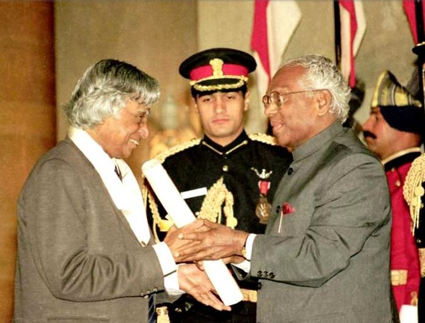

A . P . J Abdul Kalam
1931 - 2015
Missile Man of India
Avul Pakir Jainulabdeen Abdul Kalam 15 October 1931 – 27 July
2015) was an Indian aerospace scientist who served as the 11th
president of India from 2002 to 2007. He was born and raised in
Rameswaram, Tamil Nadu and studied physics and aerospace
engineering. He spent the next four decades as a scientist and
science administrator, mainly at the Defence Research and
Development Organisation (DRDO) and Indian Space Research
Organisation (ISRO) and was intimately involved in India's civilian
space programme and military missile development efforts.[1] He thus
came to be known as the Missile Man of India for his work on the
development of ballistic missile and launch vehicle
technology. He also played a pivotal organisational,
technical, and political role in India's Pokhran-II nuclear tests in
1998, the first since the original nuclear test by India in 1974.
Early life and education

Avul Pakir Jainulabdeen Abdul Kalam was born on 15 October 1931, to a Tamil Muslim family in the pilgrimage centre of Rameswaram on Pamban Island, then in the Madras Presidency and now in the State of Tamil Nadu. His father Jainulabdeen Marakayar was a boat owner and imam of a local mosque his mother Ashiamma was a housewife. His father owned a ferry that took Hindu pilgrims back and forth between Rameswaram and the now uninhabited Dhanushkodi. Kalam was the youngest of four brothers and one sister in his family. His ancestors had been wealthy Marakayar traders and landowners, with numerous properties and large tracts of land. Marakayar are a Muslim ethnic group found in coastal Tamil Nadu and Sri Lanka who claim descent from Arab traders and local women. The family business had involved trading groceries between the mainland and the island and to and from Sri Lanka, as well as ferrying pilgrims between the mainland and Pamban. With the opening of the Pamban Bridge to the mainland in 1914, however, the businesses failed and the family fortune and properties were lost by the 1920s, apart from the ancestral home. The family was poverty-stricken by the time Kalam was born. As a young boy he had to sell newspapers to add to the family's meager income. In his school years, Kalam had average grades but was described as a bright and hardworking student who had a strong desire to learn. He spent hours on his studies, especially mathematics. After completing his education at the Schwartz Higher Secondary School, Ramanathapuram, Kalam went on to attend Saint Joseph's College, Tiruchirappalli, then affiliated with the University of Madras, from where he graduated in physics in 1954. He moved to Madras in 1955 to study aerospace engineering in Madras Institute of Technology. Kalam met the deadline, impressing the Dean, who later said to him, "I was putting you under stress and asking you to meet a difficult deadline. He narrowly missed achieving his dream of becoming a fighter pilot, as he placed ninth in qualifiers, and only eight positions were available in the IAF.
Career as a scientist

After graduating from the Madras Institute of Technology in 1960, Kalam joined the Aeronautical Development Establishment of the Defence Research and Development Organisation (by Press Information Bureau, Government of India) as a scientist after becoming a member of the Defence Research & Development Service (DRDS). He started his career by designing a small hovercraft, but remained unconvinced by his choice of a job at DRDO. Kalam joined the INCOSPAR, working under Vikram Sarabhai, the renowned space scientist.[13] He was interviewed and recruited into ISRO by H. G. S. Murthy, the first Director of Thumba Equatorial Rocket Launching Station (TERLS). In 1969, Kalam was transferred to the Indian Space Research Organisation (ISRO) where he was the project director of India's first Satellite Launch Vehicle (SLV-III) which successfully deployed the Rohini satellite in near-earth orbit in July 1980; Kalam had first started work on an expandable rocket project independently at DRDO in 1965. In 1969, Kalam received the government's approval and expanded the programme to include more engineers.
Presidency
Kalam served as the 11th president of India, succeeding K. R. Narayanan. He won the 2002 presidential election with an electoral vote of 922,884, surpassing the 107,366 votes won by Lakshmi Sahgal. His term lasted from 25 July 2002, to 25 July 2007. On 10 June 2002, the National Democratic Alliance (NDA) which was in power at the time, expressed that they would nominate Kalam for the post of President, and both the Samajwadi Party and the Nationalist Congress Party backed his candidacy. After the Samajwadi Party announced its support for Kalam, Narayanan chose not to seek a second term in office, leaving the field clear. Kalam said of the announcement of his candidature: I am really overwhelmed. Everywhere both in Internet and in other media, I have been asked for a message. I was thinking what message I can give to the people of the country at this juncture. On 18 June, Kalam filed his nomination papers in the Indian Parliament, accompanied by Vajpayee and his senior Cabinet colleagues. The polling for the presidential election began on 15 July 2002, in Parliament and the state assemblies, with the media claiming that the election was a one-sided affair and Kalam's victory was a foregone conclusion; the count was held on 18 July. Kalam became the 11th president of the Republic of India in an easy victory, and moved into the Rashtrapati Bhavan after he was sworn in on 25 July. Kalam was the third President of India to have been honoured with a Bharat Ratna, India's highest civilian honour, before becoming the President Sarvepalli Radhakrishnan (1954) and Zakir Hussain (1963) were the earlier recipients of Bharat Ratna who later became the President of India.[50] He was also the first scientist and the first bachelor to occupy Rashtrapati Bhawan.During his term as president, he was affectionately known as the People's President, saying that signing the Office of Profit Bill was the toughest decision he had taken during his tenure. Kalam was criticised for his inaction in deciding the fate of 20 out of the 21 mercy petitions submitted to him during his tenure.[58] Article 72 of the Constitution of India empowers the President of India to grant pardons, and suspend or commute the death sentence of convicts on death row. Kalam acted on only one mercy plea in his five-year tenure as president, rejecting the plea of rapist Dhananjoy Chatterjee, who was later hanged. Perhaps the most notable plea was from Afzal Guru, a Kashmiri terrorist who was convicted of conspiracy in the December 2001 attack on the Indian Parliament and was sentenced to death by the Supreme Court of India in 2004. While the sentence was scheduled to be carried out on 20 October 2006, the pending action on his mercy plea resulted in him remaining on death row. He also took the controversial decision to impose President's Rule in Bihar in 2005. In September 2003, in an interactive session in PGI Chandigarh, Kalam supported the need of Uniform Civil Code in India, keeping in view the population of the country. At the end of his term, on 20 June 2007, Kalam expressed his willingness to consider a second term in office provided there was certainty about his victory in the 2007 presidential election. However, two days later, he decided not to contest the Presidential election again stating that he wanted to avoid involving Rashtrapati Bhavan from any political processes. He was proposed by third front named United National Progressive Alliance leader J. Jayalalithaa and coordinator Chandrababu Naidu other leaders Mulayam Singh Yadav and Om Prakash Chautala, but he did not have the support of the left parties, Shiv Sena and UPA constituents, to receive a renewed mandate.
Post-presidency
After leaving office, Kalam became a visiting professor at the Indian Institute of Management Shillong, the Indian Institute of Management Ahmedabad, and the Indian Institute of Management Indore; an honorary fellow of Indian Institute of Science, Bangalore;[79] chancellor of the Indian Institute of Space Science and Technology Thiruvananthapuram; professor of Aerospace Engineering at Anna University; and an adjunct at many other academic and research institutions across India. He taught information technology at the International Institute of Information Technology, Hyderabad, and technology at Banaras Hindu University and Anna University.[80] In 2011, Kalam was criticised by civil groups over his stand on the Koodankulam Nuclear Power Plant; he supported the establishment of the nuclear power plant and was accused of not speaking with the local people.[81] The protesters were hostile to his visit as they saw him as a pro-nuclear scientist and were unimpressed by the assurances he provided regarding the safety features of the plant.[82] In May 2012, Kalam launched a programme for the youth of India called the What Can I Give Movement, with a central theme of defeating corruption.
Death
On 27 July 2015, Kalam travelled to Shillong to deliver a lecture on "Creating a Livable Planet Earth" at the Indian Institute of Management Shillong. While climbing a flight of stairs, he experienced some discomfort, but was able to enter the auditorium after a brief rest.[85] At around 6:35 p.m. IST, only five minutes into his lecture, he collapsed.[86][87] He was rushed to the nearby Bethany Hospital in a critical condition; upon arrival, he lacked a pulse or any other signs of life.[86] Despite being placed in the intensive care unit, Kalam was confirmed dead of a sudden cardiac arrest at 7:45 p.m. IST.[86][88][89] His last words, to his aide Srijan Pal Singh, were reportedly: "Funny guy! Are you doing well?"[90] Following his death, Kalam's body was airlifted in an Indian Air Force helicopter from Shillong to Guwahati, from where it was flown to New Delhi on the morning of 28 July in an air force C-130J Hercules. The flight landed at Palam Air Base that afternoon and was received by the President, the vice-president, the Prime Minister, Chief Minister of Delhi Arvind Kejriwal, and the three service chiefs of the Indian Armed Forces, who laid wreaths on Kalam's body.[91] His body was then placed on a gun carriage draped with the Indian flag and taken to his Delhi residence at 10 Rajaji Marg; there, the public and numerous dignitaries paid homage, including former prime minister Manmohan Singh, Congress President Sonia Gandhi and Vice-president Rahul Gandhi, and Uttar Pradesh Chief Minister Akhilesh Yadav.[92] On the morning of 29 July, Kalam's body, wrapped in the Indian flag, was taken to Palam Air Base and flown to Madurai in an air force C-130J aircraft, arriving at Madurai Airport that afternoon. His body was received at the airport by the three service chiefs and national and state dignitaries, including cabinet ministers Manohar Parrikar, Venkaiah Naidu, Pon Radhakrishnan and the governors of Tamil Nadu and Meghalaya, K Rosaiah and V. Shanmuganathan. After a brief ceremony, Kalam's body was flown by air force helicopter to the town of Mandapam, from where it was taken in an army truck to his hometown of Rameswaram. Upon arriving at Rameswaram, his body was displayed in an open area in front of the local bus station to allow the public to pay their final respects until 8 p.m. that evening.[93][94] On 30 July 2015, the former president was laid to rest at Rameswaram's Pei Karumbu Ground with full state honours. Over 350,000 people attended the last rites, including the Prime Minister, the governor of Tamil Nadu and the chief ministers of Karnataka, Kerala and Andhra Pradesh.
Personal life

Kalam was the youngest of five siblings, the eldest of whom was a sister, Asim Zohra (d. 1997), followed by three elder brothers: Mohammed Muthu Meera Lebbai Maraikayar (5 November 1916 – 7 March 2021),[121][122] Mustafa Kalam (d. 1999) and Kasim Mohammed (d. 1995).He was extremely close to his elder siblings and their extended families throughout his life, and would regularly send small sums of money to his older relations, himself remaining a lifelong bachelor. Kalam was noted for his integrity and his simple lifestyle. He never owned a television, and was in the habit of rising at 6:30 or 7 a.m. and sleeping by 2 a.m.[126] His few personal possessions included his books, his veena, some articles of clothing, a CD player and a laptop; at his death, he left no will, and his possessions went to his eldest brother, who survived him.
Religious and spiritual views

Religion and spirituality were very important to Kalam throughout his life.[129] He made his own spiritual journey the subject of his final book, Transcendence: My Spiritual Experiences with Pramukh Swamiji.[130][131] Islam A proud and practising Muslim, daily namaz and fasting during Ramadan were integral to Kalam's life.[9][132][133] His father, the imam of a mosque in his hometown of Rameswaram, had strictly instilled these Islamic customs in his children.[9] His father had also impressed upon the young Kalam the value of interfaith respect and dialogue. As Kalam recalled: "Every evening, my father A. P. Jainulabdeen, an imam, Pakshi Lakshmana Sastry, the head priest of the Ramanathaswamy Hindu temple, and a church priest used to sit with hot tea and discuss the issues concerning the island."[130][134] Such early exposure convinced Kalam that the answers to India's multitudinous issues lay in "dialogue and cooperation" among the country's religious, social, and political leaders.[132] Moreover, since Kalam believed that "respect for other faiths" was one of the key cornerstones of Islam, he was fond of saying: "For great men, religion is a way of making friends; small people make religion a fighting tool."[135] Syncretism One component of Kalam's widespread popularity among diverse groups in India, and an enduring aspect of his legacy, is the syncretism he embodied in appreciating various elements of the many spiritual and cultural traditions of India.[132][133][136][137] In addition to his faith in the Quran and Islamic practice, Kalam was well-versed in Hindu traditions; he learnt Sanskrit,[138][139] read the Bhagavad Gita[140][141] and he was a vegetarian.[142] Kalam also enjoyed writing Tamil poetry, playing the veena (an Indian string instrument),[143] and listening to Carnatic devotional music every day.[133] In 2002, in one of his early speeches to Parliament after becoming president, he reiterated his desire for a more united India, stating that "during the last one year I met a number of spiritual leaders of all religions ... and I would like to endeavour to work for bringing about unity of minds among the divergent traditions of our country".[136] Describing Kalam as a unifier of diverse traditions, Congress leader Shashi Tharoor stated, "Kalam was a complete Indian, an embodiment of the eclecticism of India's heritage of diversity".[133] BJP leader L. K. Advani concurred that Kalam was "the best exemplar of the Idea of India, one who embodied the best of all the cultural and spiritual traditions that signify India's unity in immense diversity. This was most strikingly evident in the second-to-last book he published, presciently titled Transcendence: My Spiritual Experiences with Pramukh Swami".
Awards and honours
Kalam received 7 honorary doctorates from 40 universities.[151][152] The Government of India honoured him with the Padma Bhushan in 1981 and the Padma Vibhushan in 1990 for his work with ISRO and DRDO and his role as a scientific advisor to the Government.[153] In 1997, Kalam received India's highest civilian honour, the Bharat Ratna, for his contribution to the scientific research and modernisation of defence technology in India.[154] In 2013, he was the recipient of the Von Braun Award from the National Space Society "to recognize excellence in the management and leadership of a space-related project".[155] In 2012, Kalam was ranked number 2 in Outlook India's poll of the Greatest Indian.[156] Following his death, Kalam received numerous tributes. The Tamil Nadu state government announced that his birthday, 15 October, would be observed across the state as "Youth Renaissance Day;" the state government further instituted the "Dr. A. P. J. Abdul Kalam Award", constituting an 8-gram gold medal, a certificate and ₹500,000 (US$6,300). The award will be awarded annually on Independence Day, beginning in 2015, to residents of the state with achievements in promoting scientific growth, the humanities or the welfare of students.[157] On the anniversary of Kalam's birth in 2015 the CBSE set topics on his name in the CBSE expression series.[158] Prime Minister Narendra Modi ceremonially released postage stamps commemorating Kalam at DRDO Bhawan in New Delhi on 15 October 2015, the 84th anniversary of Kalam's birth. Researchers at the NASA's Jet Propulsion Laboratory (JPL) had discovered a new bacterium on the filters of the International Space Station (ISS) and named it Solibacillus kalamii to honour the late president Dr. A. P. J. Abdul Kalam.